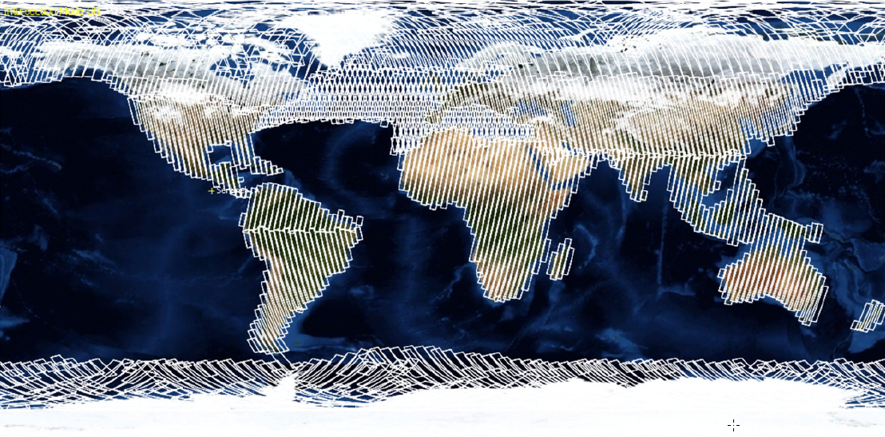
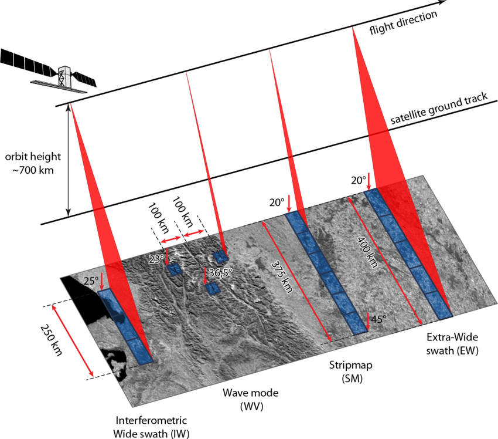

Sentinel 1
Radar de Apertura Sintética
Resumen
La misión Sentinel-1 es el Observatorio Radar Europeo de la iniciativa conjunta Copernicus de la Comisión Europea (CE) y la Agencia Espacial Europea (ESA). Copernicus es una iniciativa europea para la puesta en marcha de servicios de información relacionados con el medio ambiente y la seguridad. Se basa en los datos de observación recibidos de los satélites de observación de la Tierra y la información terrestre.
La misión Sentinel-1 incluye imágenes en banda C que operan en cuatro modos de imagen exclusivos con diferente resolución (hasta 5 m) y cobertura (hasta 400 km). Ofrece capacidad de doble polarización, tiempos de revisita muy cortos y una rápida entrega de productos. Para cada observación, se dispone de mediciones precisas de la posición y la actitud de la nave espacial.
El radar de apertura sintética (SAR) tiene la ventaja de operar en longitudes de onda que no se ven obstaculizadas por la nubosidad o la falta de iluminación, y puede adquirir datos sobre un lugar durante el día o la noche en todas las condiciones meteorológicas. Sentinel-1, con su instrumento C-SAR, puede ofrecer una vigilancia fiable y repetida de una zona amplia.
La misión está compuesta por una constelación de dos satélites, Sentinel-1A y Sentinel-1B, que comparten el mismo plano orbital.
Sentinel-1 está diseñado para trabajar en un modo de operación preprogramado y libre de conflictos, obteniendo imágenes de todas las masas terrestres mundiales, zonas costeras y rutas marítimas en alta resolución y cubriendo el océano mundial con viñetas. Esto garantiza la fiabilidad del servicio requerida por los servicios operativos y un archivo de datos consistente a largo plazo construido para aplicaciones basadas en series temporales largas.
Objetivos de la misión
La misión proporciona una capacidad operativa independiente para la cartografía radar continua de la Tierra.
La misión Sentinel-1 está diseñada para proporcionar una mayor frecuencia de revisita, cobertura, puntualidad y fiabilidad para los servicios operativos y las aplicaciones que requieren series temporales largas.
La misión proporcionará una capacidad de interferometría operativa gracias a los estrictos requisitos impuestos a la precisión de la actitud, al conocimiento de la actitud y de la órbita, y a la precisión de los tiempos de toma de datos.
La constelación cubrirá la totalidad de las masas terrestres del mundo con periodicidad quincenal, las zonas de hielo marino, las zonas costeras de Europa y las rutas marítimas con periodicidad diaria y el océano abierto de forma continua mediante imágenes de las olas.
El instrumento SAR del Sentinel-1 y su corto tiempo de revisita harán avanzar enormemente las capacidades de los usuarios y proporcionarán datos de forma rutinaria y sistemática para la vigilancia marítima y terrestre, la respuesta a emergencias, el cambio climático y la seguridad.
Se espera que cada satélite Sentinel-1 transmita datos de observación de la Tierra durante al menos 7 años y tenga combustible a bordo para 12 años.
El Documento de Requisitos de la Misión (MRD) del Sentinel-1 describe en detalle todos los requisitos específicos de la misión.
Orbita
Sentinel-1 se encuentra en una órbita casi polar, sincrónica al sol, con un ciclo de repetición de 12 días y 175 órbitas por ciclo para un solo satélite. Tanto Sentinel-1A como Sentinel-1B comparten el mismo plano orbital con una diferencia de fase orbital de 180°. Con ambos satélites en funcionamiento, el ciclo de repetición es de seis días.

En particular, para la interferometría, Sentinel-1 requiere un estricto control de la órbita. El posicionamiento del satélite a lo largo de la órbita debe ser preciso, con apuntamiento y sincronización entre pares interferométricos. El control del posicionamiento de la órbita de Sentinel-1 se define mediante un “tubo” orbital fijo en la Tierra, de 50 m (RMS) de radio, alrededor de una trayectoria operativa nominal. El satélite se mantiene dentro de este “tubo” durante la mayor parte de su vida operativa.
Escenario de producción
Las operaciones del segmento terrestre del Sentinel-1 implementan un escenario de producción de la misión predefinido. Este escenario prevé el procesamiento sistemático y la difusión en línea de todos los datos del Sentinel-1 adquiridos en los modos IW, EW y SM en productos GRD de Nivel 0 y Nivel 1.
Esto se complementa con el procesamiento sistemático y la difusión en línea de:
- Productos SLC de Nivel-1 para todos los datos adquiridos en Modo Onda (activos desde octubre de 2016 para Sentinel-1B y desde mayo de 2017 para Sentinel-1A).
- Productos SLC de Nivel-1 para todos los datos adquiridos en modo IW sobre áreas regionales específicas, que ha evolucionado durante las operaciones para cubrir todos los datos adquiridos en modo IW
- Productos oceánicos de nivel 2 para todos los datos adquiridos en modo Ola (activos desde julio de 2015 para Sentinel-1A y desde octubre de 2016 para Sentinel-1B)
- Productos oceánicos de nivel 2 para todos los datos adquiridos en modo IW y EW sobre zonas regionales específicas
Las zonas geográficas en las que se generan sistemáticamente los productos SLC de nivel 1 de Sentinel-1A han evolucionado gradualmente desde la apertura del acceso a los datos en línea el 3 de octubre de 2014 y se han ido incrementando paulatinamente en los meses siguientes con el objetivo de que los productos SLC estén disponibles para todos los datos adquiridos en modo IW.
La evolución de las zonas en las que se han generado sistemáticamente productos SLC de nivel 1 de Sentinel-1A y se han puesto a disposición para la descarga de datos en línea desde la apertura del acceso a los datos se resume en una serie de mapas etiquetados en el tiempo (descargar la evolución de los mapas SLC).
Cada mapa está asociado a la fecha a partir de la cual los datos IW adquiridos sobre las nuevas áreas enumeradas en el mapa han sido sistemáticamente procesados y puestos a disposición como productos SLC de nivel 1. Cada vez que un área se añadía al escenario de procesamiento sistemático del SLC, seguía formando parte de este escenario en el futuro.
A continuación se ofrece un resumen de la producción sistemática de IW de Sentinel-1 y del acceso a los datos en línea:
Para Sentinel-1A:
- Desde el 28.07.2015: Todos los datos de IW sobre masas de hielo y tierra están disponibles sistemáticamente como SLC
- Desde el 14.04.2016: Todos los datos de IW están disponibles sistemáticamente como SLC
Para Sentinel-1B:
- Desde el 26.09.2016 (apertura del acceso a los datos S1B): Todos los datos de IW están disponibles sistemáticamente como SLC
Además, todos los datos de Sentinel-1A adquiridos antes del 28 de julio de 2015 y no procesados originalmente a SLC (es decir, los datos adquiridos fuera de las áreas regionales predefinidas de SLC) se han procesado hacia atrás durante 2016 y se han puesto a disposición para el acceso a los datos en línea. Como resultado, los productos SLC de nivel 1 están disponibles para todos los datos de Sentinel-1 adquiridos en modo IW.
Las áreas geográficas en las que los datos de Sentinel-1 IW y EW se procesan sistemáticamente a productos OCN de nivel 2 y se ponen a disposición para el acceso a los datos en línea también han evolucionado con el tiempo. Esta evolución se resume en una serie de mapas etiquetados en el tiempo (descargar la evolución de los mapas IW/EW OCN).
El 100% de los datos IW y SM adquiridos sobre masas terrestres en todo el mundo se elaboran sistemáticamente a productos OCN de nivel 1 y se ponen a disposición.
Cobertura geográfica
Un solo satélite Sentinel-1 podrá cartografiar el mundo entero una vez cada 12 días. La constelación de dos satélites ofrece un ciclo de repetición exacta de 6 días. La constelación tendrá una frecuencia de repetición (ascendente/descendente) de 3 días en el ecuador, menos de 1 día en el Ártico y se espera que proporcione cobertura sobre Europa, Canadá y las principales rutas marítimas en 1-3 días, independientemente de las condiciones meteorológicas. Los datos del radar se entregarán a los servicios de Copernicus una hora después de su adquisición.

Intrumentos a bordo
Sentinel-1 lleva un único instrumento de radar de apertura sintética en banda C que opera a una frecuencia central de 5,405 GHz. Incluye una antena activa phased array de orientación derecha que proporciona un rápido escaneo en elevación y azimut, una capacidad de almacenamiento de datos de 1 410 Gb y una capacidad de enlace descendente en banda X de 520 Mbit/s.
El instrumento C-SAR soporta el funcionamiento en polarización dual (HH+HV, VV+VH) implementado a través de una cadena de transmisión (conmutable a H o V) y dos cadenas de recepción paralelas para la polarización H y V. Los datos de doble polarización son útiles para la clasificación de la cubierta terrestre y las aplicaciones del hielo marino.
Sentinel-1 funciona en cuatro modos de adquisición exclusivos:
- Stripmap (SM)
- Interferométrico de banda ancha (IW)
- Espectro extra ancho (EW)
- Modo de ondas (WV).

Los principales modos sin conflicto son IW sobre tierra y WV sobre mar abierto.
Modo Stripmap (SM)
El modo de imagen Stripmap se proporciona para la continuidad con las misiones ERS y Envisat. El modo Stripmap proporciona una cobertura con una resolución de 5 m por 5 m sobre una estrecha franja de 80 km. Se puede seleccionar una de las seis franjas de imágenes cambiando el ángulo de incidencia del haz y el ancho del haz de elevación.
Modo de hilera ancha interferométrica (IW)
El modo interferométrico de franja ancha (IW) permite combinar una gran anchura de franja (250 km) con una resolución geométrica moderada (5 m por 20 m). El modo IW toma imágenes de tres sub-bandas utilizando la Observación del Terreno con Escáneres Progresivos SAR (TOPSAR). Con la técnica TOPSAR, además de dirigir el haz en el rango como en SCANSAR, el haz también se dirige electrónicamente de atrás hacia adelante en la dirección acimut para cada ráfaga, evitando el festoneado y dando como resultado una imagen de mayor calidad. La interferometría está garantizada por un solapamiento suficiente del espectro Doppler (en el dominio acimutino) y del espectro del número de onda (en el dominio de la elevación). La técnica TOPSAR garantiza una calidad de imagen homogénea en toda la franja.
El modo IW es el modo de adquisición por defecto sobre tierra.
Modo de barrido extra ancho (EW)
El modo de imagen de franja extra ancha está destinado a los servicios operativos marítimos, de hielo y de zonas polares en los que se requiere una amplia cobertura y tiempos de revisita cortos. El modo EW funciona de forma similar al modo IW, empleando una técnica TOPSAR que utiliza cinco sub-surcos en lugar de tres, lo que resulta en una resolución menor (20 m por 40 m). El modo EW también se puede utilizar para la interferometría como en el modo IW.
Modo Onda (WV)
El modo Wave del Sentinel-1, junto con los modelos globales de olas oceánicas, puede ayudar a determinar la dirección, la longitud de onda y las alturas de las olas en los océanos abiertos.
Las adquisiciones en el modo de olas se componen de imágenes de mapa de franjas de 20 km por 20 km, adquiridas alternativamente en dos ángulos de incidencia diferentes. Las imágenes de olas se adquieren cada 100 km, con imágenes en el mismo ángulo de incidencia separadas por 200 km.
Información General
Referencias
https://sentinels.copernicus.eu/web/sentinel/user-guides/sentinel-1-sar
https://sentinels.copernicus.eu/web/sentinel/missions/sentinel-1/instrument-payload